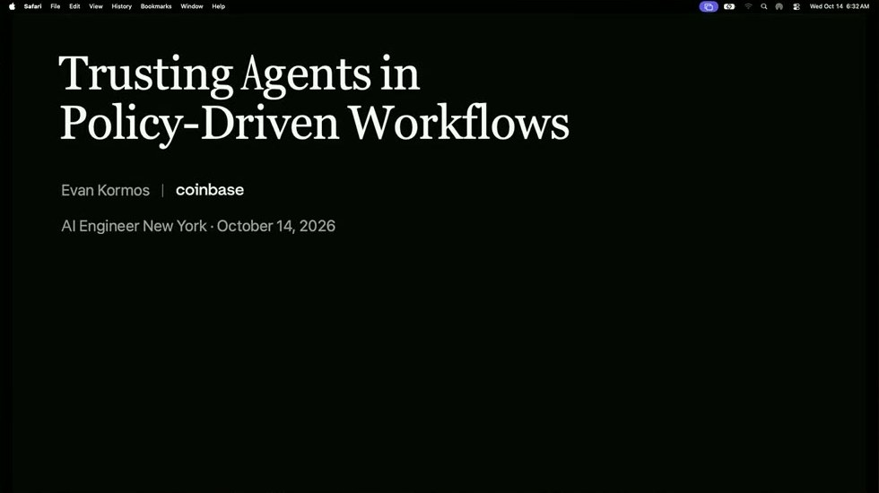
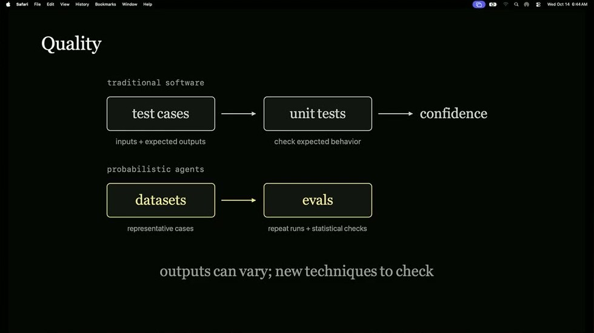
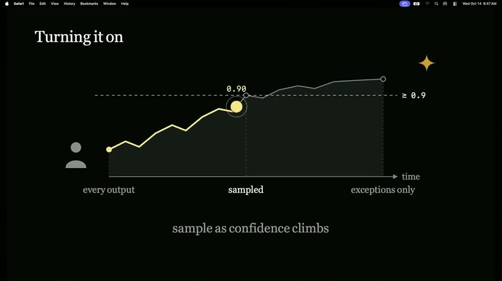
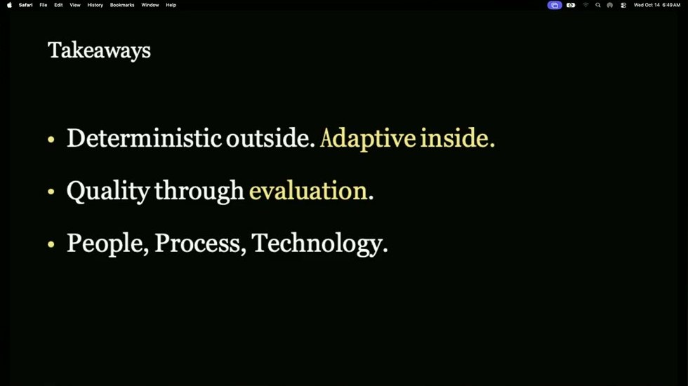

Policy is the institution's original system prompt
Kormos starts with written policy because in financial services it sets the rules for how work gets done, particularly around risk and compliance. Written well, policy uses normative terms with distinct operational weight: Must for what is required, May for what is permitted, and Should for what is recommended, as his slide spells out alongside a later reference to RFC 2119. Those rules act as the organization's original intent before any code or prompt is written.
The first architectural separation he draws is between build-time policy and the running production system. Policy changes deliberately at discrete moments, while the live system mutates constantly under product-driven changes. Keeping policy explicit and separate from runtime state gives teams a stable boundary that changing services and agents still have to obey.

“Think of policy as the original institutional intent, or the original system prompt.”00:00:18
- Written risk and compliance policy acts as the organization's foundational system prompt.
- Normative language (
Must,May,Should) distinguishes hard requirements from permissions and recommendations. - Build-time policy definition stays separate from the continuously changing runtime system.
Evidence: transcript 00:00:18 · watch the policy framing
Agents cut across people, process, and technology
Enterprise governance usually divides a running system into three layers: people, process, and technology, though the room transcript hears the phrase as "people processing technology". On Kormos's slide, those three layers appear as an isometric stack of grey cubes, which then light up in yellow across every row when agents enter the picture.
He rejects treating agents as just another tool sitting in the technology row. An agent works alongside human staff, executes steps of the process on its own, and both uses and is built out of technology. Because agents cross all three layers at once, the practical governance questions sit where agent behavior meets process rules: what work you delegate, what boundaries you enforce, and how you verify the result.
“So I see them as an operational model cutting across all three. They work with people, execute parts of the process themselves, and they use and are made up of technology.”00:02:29
- Agents are not confined to the tooling layer; they span people, process, and technology simultaneously.
- They collaborate with staff, execute workflow steps directly, and run on top of existing technical infrastructure.
- Governance centers on scoping agent tasks, setting explicit process boundaries, and verifying outputs.
Evidence: transcript 00:02:29 · watch the people-process-tech model
Parallelizing reviews inside a gated DAG
Regulated workflows move in a strict, gated order: a code change needs approval before going live, and a customer must clear verification before an account opens. Kormos argues that introducing agents makes it worth mapping those flows explicitly as directed acyclic graphs, or DAGs, citing Apache Airflow right before the room recording ends. A DAG fixes the forward dependencies and compliance gates without allowing the process to loop backward past a required check.
Within that fixed graph, agents change the economics of parallel review. Independent checks that used to cost too much or take too much coordination to run side by side can now execute concurrently and merge their findings at a downstream gate. His slide titled "A process" illustrates the split: a Change request fans out in parallel to Code review (marked with an internal agent loop) and Security scan before converging at Release approval, separating the inner flow of people and agents from the outer policy boundary.
“Previously, some work used to cost too much or be too complex to coordinate in this way. Now we can run independent reviews alongside each other, bring results together, but keep the required checks in place.”00:03:19
- Modeling workflows as DAGs preserves forward dependencies and mandatory approval gates.
- Agents make previously cost-prohibitive parallel reviews practical to run side by side.
- The outer graph enforces the policy boundary while people and agents collaborate inside individual nodes.
Evidence: transcript 00:03:19 · watch the gated DAG walkthrough
Inside the loop: checking variable outputs with datasets and evals
Once the outer graph is fixed, Kormos's slides turn to the question he posed earlier on stage: how to bound agent work and build trust in its outputs. His "What's hard?" sequence zooms into a single adaptive node built as a three-step draft -> check -> refine loop. A draft only exits the node when the check diamond passes; a failure routes back to refine, shaped by four context inputs listed on the slide: prompt, model, MCP and tools, and memory.
Isolating that check diamond exposes why unit tests alone cannot govern an agent step. On his "Quality" slide, Kormos contrasts traditional deterministic software, where fixed test cases feed unit tests to establish confidence in expected behavior, with probabilistic agents whose outputs vary across runs. Trusting an adaptive loop requires representative datasets paired with evals that run repeatedly and apply statistical checks rather than expecting byte-identical answers.

“So for our talk today, we're going to be focusing here where agents need process, what work we give them, what boundaries we set, and how we build trust in their outputs.”00:02:29
- According to the slides, each adaptive workflow node runs a bounded
draft -> check -> refinecycle gated by an explicit check step. - Context inside that loop spans four moving parts: prompt, model, MCP/tools, and memory.
- Because agent outputs vary across runs, the slides pair traditional unit tests on the outer system with datasets and statistical evals on the agent.
Evidence: transcript 00:02:29 · watch the check loop and evals
Scoping the agent node and ramping down human review
Two closing examples on Kormos's slides apply this architecture to financial underwriting and production rollout, keeping runtime execution bound by institutional policy. On the slide "Where does the agent belong?", an underwriting DAG runs from intake through parallel KYC and financials nodes into a highlighted credit memo stage, followed by risk review and decision. Rather than handing the whole credit decision to an autonomous model, the slide scopes the agent to assembling the credit memo under four checked controls: policy check, bounded loop, traced, and human fallback.
His "Turning it on" chart then maps how human oversight changes once that bounded node goes live. At launch, staff review every output while eval scores climb; once measured performance crosses a 0.90 (>= 0.9) threshold line on the chart, supervision shifts to sampled review, and eventually to exceptions only. Kormos's final slide summarizes the whole talk in three lines: "Deterministic outside. Adaptive inside.", "Quality through evaluation.", and "People, Process, Technology."


“Everything is expected to still be roughly bound by policy, but ultimately, we separate this from the run state and the build state.”00:00:18
- In the credit-underwriting slide example, the agent owns
credit memosynthesis between parallel KYC/financials checks and human risk review. - Every agent-driven node on the slide carries four explicit controls: policy check, bounded loop, full trace, and human fallback.
- Human supervision scales down along an eval curve: reviewing every output at first, sampling above a
0.90threshold, and handling exceptions only once confidence holds.
Evidence: transcript 00:00:18 · watch the credit-memo rollout